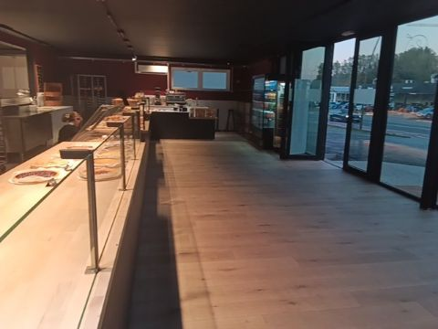
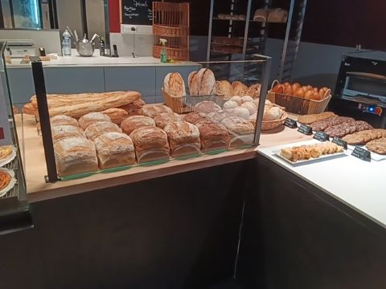
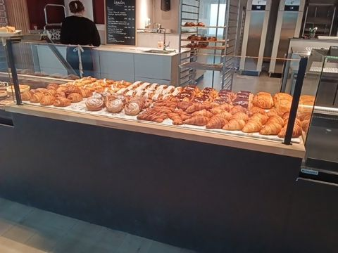
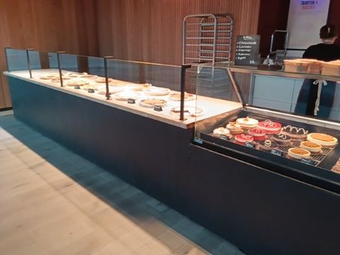
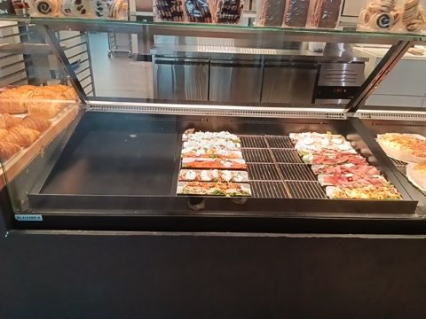
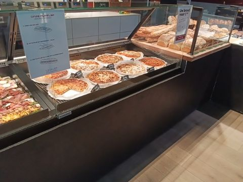
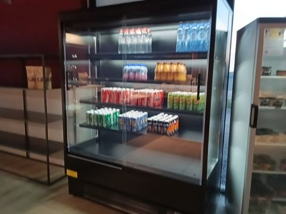
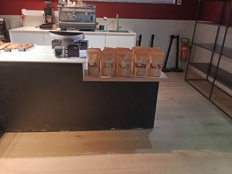

Atelier by - Halle
Dashboard magasin · la journée en cours · mardi 6 octobre 2026
en direct · relu à 08:14↻ Relire
mardi 06/10
08:14
ouvert depuis 06:00 · relu toutes les 2 min
Ventes
253 €28 clients
J−7 à la même heure : 420 €, 27 clients · − 40 %
Objectif du jour
14 %de 1 814 €
il reste 1 561 € · mardi dernier, à cette heure : 37 % de sa journée
Vitrine
235pièces
9 références vides · 2 vont manquer · 7 finiront en trop
Équipe en poste
2personnes
jusqu’à 11:00 et jusqu’à 13:00 · relève à 13:00 · 19,5 h au planning
Prochaine cuisson
Midi four à 10:15
77 pièces à sortir de 11:00 à 13:00 · dans 2 h 01
À faire maintenant
du plus urgent au moins urgent · chaque ligne ouvre l’écran où on le fait2 urgentes · 3 ce matin- 1Remplir 9 références vides6 cookies vides jusqu’à la cuisson de 11:00 : Chocolat Lait, Chocolat Blanc, Noix & Caramel, Chocolat Noir, Avoine Raisins et Noisette, Double Chocolat · 3 pas produites aujourd’hui : Pain au Noix & Sésame, Pain Tradition - 4 Céréales, FlipFlap - Omelette & Saumonsmaintenant17 pièces conseillées›
- 2Rendre 4 contrôlesBiscuiterie, Pâtisseries, Promotions encadrées et visibles, Étiquetage prix et allergènes · 8 rendus entre 05:47 et 05:55maintenant8 / 12 rendus›
- 3Clôturer 9 commandes en retardl’heure de retrait est passée et la commande reste ouverte dans la caisse · du 29/09 au 05/10 · 518,40 €ce matindans la caisse›
- 4Valider la cuisson du matin335 pièces prévues, four à 05:15 · pas encore validée dans le plan de productionavant 09:00plan de production›
- 5Compléter 2 références qui vont manquerPain 10 Céréales vers 11 h, 4 pièces · Pain au Chocolat vers 12 h, 1 pièceà la cuisson de midi5 pièces›
- 6Lancer la cuisson de midi77 pièces pour 11:00 à 13:00 · réduire 7 références qui finiront en trop : Sandwich, 1/4 - Quiches, 1/2 - Quiches, 1/4…four à 10:15dans 2 h 01›
- 7À la fermeture : encoder la poubellerien n’est déclaré aujourd’hui · le coût de ce qui est jeté se retire du résultatà 19:00au panel›
- 8Demain : 1 commande à préparer46,80 € · retrait à 14:00 · 3 commandes à venir d’ici le 12/10mercredià prévoir au plan›
La journée
de 04:00 à 19:00 · le trait rouge : maintenantÉquipe
19,5 h
19,5 h
04:00–11:00 · production et vente06:00–13:00 · vente13:00–18:30 · après-midi
Four
Matin 05:15 · à validerMidi 10:15
Vitrine
335 p.77 p.
Commandes
06:00 · 1 retirée · rien d’autre aujourd’hui
4 h6 h8 h10 h12 h14 h16 h18 h
Ce matin, heure par heure · vendu au comptoir face aux 6 derniers mardis
moyenne des 6 derniers mardisvendu, sous la moyenneau-dessusheure en cours, à 08:14
La vitrine
ce qui est sorti du four face à ce qui est vendu · prévision des 6 derniers mardis412 sorties · 102 vendues · 235 en vitrine| Référence | Rayon | Sorties | Vendues | En vitrine | Fin de journée prévue | État | À faire |
|---|---|---|---|---|---|---|---|
| Cookie Chocolat Lait | Biscuiterie | 10 | 2 | -2 | +5,7 | vide de 6 h à 11 h | recuire 4 |
| Cookie Chocolat Blanc | Biscuiterie | 10 | 0 | 0 | +7,4 | vide de 6 h à 11 h | recuire 3 |
| Cookie Noix & Caramel | Biscuiterie | 10 | 0 | 0 | +8,3 | vide de 6 h à 11 h | recuire 2 |
| Cookie Chocolat Noir | Biscuiterie | 10 | 0 | 0 | +8,7 | vide de 6 h à 11 h | recuire 2 |
| Cookie Avoine Raisins et Noisette | Biscuiterie | 10 | 0 | 0 | +8,1 | vide de 6 h à 11 h | recuire 2 |
| Cookie Double Chocolat | Biscuiterie | 10 | 0 | 0 | +9,3 | vide de 6 h à 11 h | recuire 1 |
| Pain au Noix & Sésame | Boulangerie | 0 | 0 | 0 | -0,6 | pas produite | recuire 1 |
| Pain Tradition - 4 Céréales | Boulangerie | 0 | 0 | 0 | -0,5 | pas produite | recuire 1 |
| FlipFlap - Omelette & Saumons | Traiteur | 0 | 0 | 0 | -0,5 | pas produite | recuire 1 |
| Pain 10 Céréales | Boulangerie | 11 | 6 | 5 | -3,3 | vide vers 11 h | recuire 4 |
| Pain au Chocolat | Viennoiserie | 35 | 27 | 8 | -0,5 | vide vers 11 h | recuire 1 |
| Sandwich | Boulangerie | 38 | 0 | 26 | +17,1 | finira en trop | ne pas recuire |
| 1/4 - Quiches | Quiches | 5 | 0 | 5 | +2,2 | finira en trop | ne pas recuire |
| 1/2 - Quiches | Quiches | 3 | 0 | 3 | +2,2 | finira en trop | ne pas recuire |
| 1/4 | Tartes | 5 | 0 | 5 | +3,4 | finira en trop | ne pas recuire |
| Huit | Viennoiserie | 19 | 6 | 13 | +6,4 | finira en trop | ne pas recuire |
| Tortillon | Viennoiserie | 9 | 2 | 7 | +4,6 | finira en trop | ne pas recuire |
| Couque à la Crème | Viennoiserie | 4 | 0 | 4 | +2,1 | finira en trop | ne pas recuire |
51 autres références en ordre▾
Les contrôles en photo · ce matinTout12à noter8pas rendus48 photos rendues entre 05:47 et 05:55 · pas encore notées par le consultant · les écarts d’abord
‹
›
✗pas encore rendueBiscuiterieà faire
✗pas encore renduePâtisseriesà faire
✗pas encore renduePromotions encadrées et visiblesà faire
✗pas encore rendueÉtiquetage prix et allergènesà faire

à noterPropreté du magasinrendue à 05:47
à noterPains & Boulangerierendue à 05:54
à noterViennoiseriesrendue à 05:55
à noterTartesrendue à 05:55
à noterTraiteurrendue à 05:55
à noterQuichesrendue à 05:55
à noterBoissonsrendue à 05:55
à noterÉpicerierendue à 05:55Commandes clients
9 en retard
3 à venir · aujourd’hui : 1 retirée à 06:00 · demain : 1, 46,80 €
Stock
À jour
632 références · rien à zéro · compté hier à 06:35
Hier
Aucune non-conformité
6 photos notées le lundi 5 · rien à reprendre
Poubelle
Pas encore déclarée
à encoder à la fermeture · rien jeté pour l’instant
Promotions
Aucune
pas de promotion posée pour aujourd’hui dans le cockpit
Le chiffre, la marge, le résultat et le réseau restent dans l’onglet Jour.
Maquette